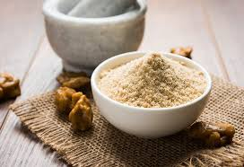

|  |
|
Asafoetida or hing is an age-old medicine for stomach problems including gas, bloating, irritable bowel syndrome (IBS), intestinal worms and flatulence; thanks to its anti-spasmodic and anti-inflammatory properties that help alleviate such health issues. Consume a dash of hing on a daily basis by adding it into gravies and dals. Another option is to dissolve some hing in water and drink it daily. (Also Read: Stomach Heat: Here's How You Can Keep Your Stomach Cool Naturally!)
Hing may also help in relieving respiratory disorders like asthma, bronchitis, dry cough, et al due to its anti-inflammatory, anti-viral and antibiotic effects. It also helps in relieving chest congestion and releasing phlegm. All you need to do is to prepare a paste using asafoetida and water and apply on your chest. You can also mix asafoetida and dry ginger powder along with some honey. Consume this mixture to get relief from respiratory issues.
Asafoetida is known to be a natural blood thinner and may help in lowering blood pressure levels. It is power-packed with coumarin, a compound that aids in improving blood flow, thereby preventing the formation of clots.(Also Read: High Blood Pressure? 5 Healthy, Delicious Snacks That You Can Enjoy Guilt-Free )
Its anti-inflammatory properties work together to reduce acne production. Whereas, its anti-bacterial properties inhibit the growth of pimples and rashes. All you need to do is to add multani mitti and rose water along with a dash of hing in a bowl. Mix the ingredients and apply it on the affected area.